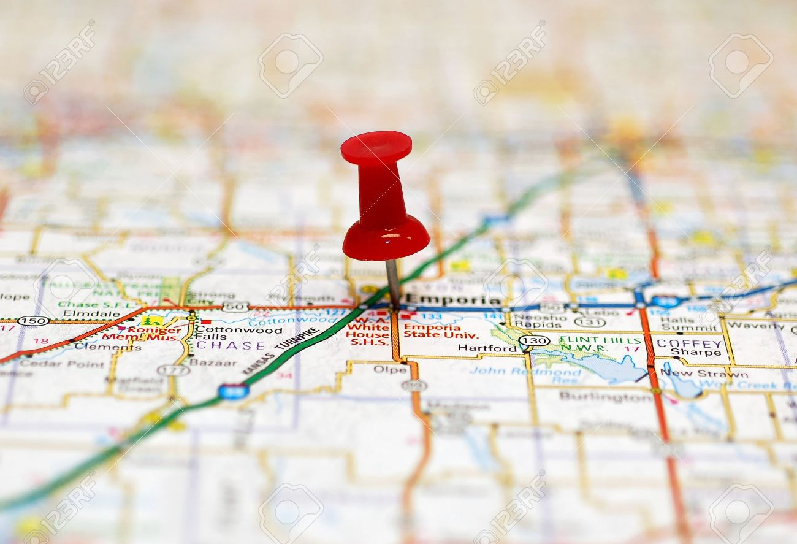

Why this talk?
-
Make pairing sessions more productive
by sharing some tips
-
Prevent discouragement while pairing
by highlighting some challenges
-
Promote pairing
to those who have never done it before
Why Me?
-
Lots of pairing for last five years
-
New team about every three to nine months
-
Paired with a lot of different personalities
My first pairing session
-
Nothing accomplished
-
Constant arguing
-
Completely exhausted
-
Skeptical
Rules of the Road
-
Two Drivers
-
Two Keyboards (or laptop + keyboard)
-
Two Monitors
Mirror displays, Mac OS remembers settings
Rules of the Road (continued)
-
No Twitter
-
No email
-
Absolutely no Facebook
-
Important phone calls OK
-
Communicate other obligations
Have a specific, agreed-upon task

Think outloud
Keep your pair alert, engaged, and informed
Need some "standard" dev environment
-
Can't expect your pair to learn all your shortcuts
Give them up if they interfere
-
Not everybody wants to learn Vim
Have something with non-vim bindings ready
-
Be accommodating to your pair
Benefits compound over time
What to do when ...
You don't get any space?
Just ask for room (verbal communication)
Practice encroachment, loudly (physical communication)
What to do when ...
You're lost?
Just ask questions
Stop frequently and recap
Talk, talk, talk
What to do when ...
It's been 2 hours and you've accomplished nothing?
Stop refactoring!
Stop weighing every little thing
Get stuff working
Some Thoughts on Remote Pairing
-
Yes, it can work
-
Good screen-sharing is a must
-
Good audio is a must
-
Good internet is a must
If you're not up and running in less than 60 seconds, just stop
-
Prior physical pairing with your pair is a plus
What to Remember
-
Be accommodating and welcoming
-
Be open, humble, trust your pair
-
Communicate: Talk, Talk, Talk
Other Tips
-
Do not pair on trivial things
i.e. Add radio button to some page
-
For research or exploratory work, keep extra laptop handy
-
Periodic breaks, at your discretion
Especially when shaving yaks
Don't disappear for 30 minutes without word of life
More Tips
-
Think outloud - ALL THE TIME
-
Mutual agreement on a SMALL goal
... before you start
-
Retrospect frequently
make sure you're on track
When is it helpful?
-
Onboarding
-
Experimenting with new technology
Extra laptop might be helpful
-
Non-trivial task
/